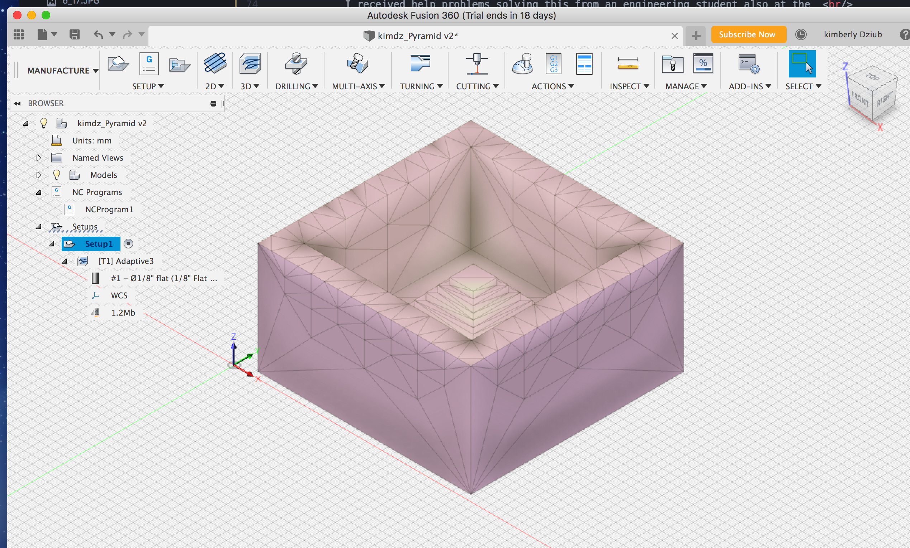

Milled Mold
Rhino File Fusion 360 Filee

The goal of this assignment is to create a mold for a plaster casting. The steps include
first creating a mold from wax, to be used to create a mold from silicon, to be used for
creating the object of desire in plaster.
I looked for inspiration on Thingaverse. Thinking about the movement of the milling
bit, I searched for ideas that didn't include an overhanging ledge. I chose a pyramid
because of it's top down unfolding nature.

I downloaded the pyramid files from thingaverse and opened the native STL file in Rhino,
where I had created a 3d mesh container that matched the size of a block of wax I intended
to mill.
In Rhino, I placed the pyramid inside my mesh container,in contact with its base.
As a 'whole', I exported the file as a 3dm file, one step toward manifesting the file
in G-Code, a language that the milling machine can interpret to carve my wax mold.

I opened my STL file in Fusion 360 where I was able to simulate a
milling tool path. Nadia who was the makerspace viewed my pyramid shape
and made the observaton that my pyramid had detailing the milling tool
and motion would not be able to render.

I sourced a new file and repeated the same process with the more simple
3D pyramid structure pictured above.(by TK3DPrinting)

In its initial state, the solids field in Fusion, did not align with my model.

I didn't notate how I solved it in the moment and can't be certain now
—but believe it was a simple input "Mesh" in Fusion "Set Up" window not a Rhino file issue.
(An engineering student working nearby believed the problem was the mesh nature
of Rhino—and that a solid is theintended file type to be used in Fusion.)

I established the correct milling bit this way: Manager > tool library > local> 1/8" flat.
I followed a set up process; Manager > new set up > where I adjusted settings under
the "set up" and "stock" tabs.

I next did the "simulate the tool path" command— in my limited experience appeared to look good!
Post processing interpreted my file as G-Code required to for Computer Controlled Milling.

I attached my wax to the mill base using hot glue and hit start.
I had these many challenges milling the small Bantam mill.
• I had to further shave down my wax to allow for mill bit despite having cut it to fit.
• Bantam sent an rror message that the bit did not have adequate retraction room.
• Back at Fusion I adjusted retraction distance with the goal of overriding error
• After starting to mill and removing 3/8" of wax I noticed the tool path was misbehaving.
• Back at Fusion to re-do simulation of tool path.
• Back in Bantam, the error message persisted
• Back to fusion where with help I made a more agressive adjustment to retraction distance.
• Back to Bantam, I hit the "start" button hoping to override the persisting error message.

Finally I was able to have progress milling.
Note! I had to hit the emergency stop when almost to the end, the mill bit ARM (not the mill bit)
made contact with my wax and began acting as a drill itself !!!(see the round cut out in my final mold).
Hence the "retraction" warning : My wax block was slightly too deep/thick, despite fitting under the mill bit.

I mixed up silicon at home and filled my mold. No issues.

I had a delay in getting plaster and resorted to using a Light weight modeling plaster which worked—
however it appears the material consistency wasn't fluid enough to get into the sharp corners.


Thanks for peer help from Peter, Cindy and Dawn for problem solving.